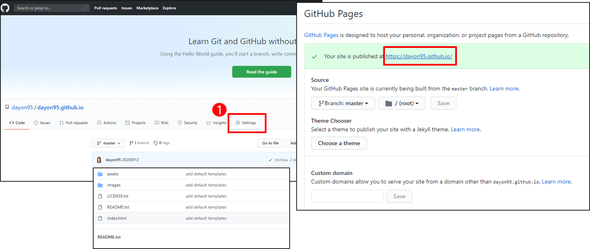
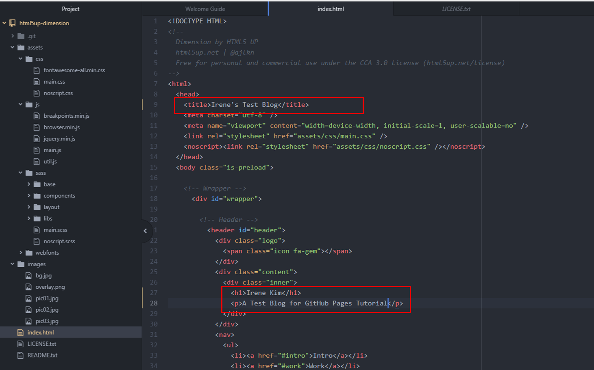

If you are a programmer, keeping track of your works through the personal website is a desirable thing to do! You may use the website in your application for fellowships, internships, jobs, and universities. In this tutorial, I'll walk you through how to make your website using Github Pages, which is Super Easy:)
Step 1: Set up your GitHub
1. Create your account at GitHub.
2. Install git or GitHub Desktop.
Step 2: Create New Repository

Click the plus button on the upper-right corner to create new repository.

Name your repository as (your-username).github.io, and click the button "Create Repository". Now you have your own website at link https://(your-username).github.io. If you name your repository as something else, for example, blog, then the link to your website will be https://(your-username).github.io/blog.
Step 3: Choose a Template for Your Website
Now you need to add contents for your website to the repository. You can start from the scratch, but you can also download free templates from online to save your time. There are many websites that provide free templates. I'll provide several links here for your convenience.
Download one template you like, and extract to the folder at which you want to host your website.
Step 4: Push to Your Repository
Open the git bash to write the following git commands to push the template to your repository.cd <your-local-directory>
git init
git remote add origin https://github.com/dayon95/dayon95.github.io.git
git add --all
git status
git commit -m "add default template files"
git push -u origin masterStep 5: Check Your First Website
In your repository at Github, you would see that the contents have been added properly.
Next, go to "Settings" tab, and you would find the link to your website under "Github Pages".
Check if the "Source" of the GitHub ages is set to the correct branch. Then follow the link to check your first website!
It might take four to eight minutes to reflect the changes in the link, so please be patient about publishing the website.
Step 6: Make some changes to the default template
Now you can customize the template by editing html, css, and js codes (or others if needed). Open your favorite code editor. I use Atom, and as shown in the picture above, I changed some contents in 'index.html', which is the main page of your website. When editing the codes, you can click html files in the local directory to see if your code is working right before you actually publish the changes to the website. When you confirmed the changes and want to change your actual website, then you just push the codes to the repository by writing the following git commands like we've done before.
git add --all
git status
git commit -m "update index.html"
git push -u origin masterReferences for Design Ideas
This is a list of links to the website of mine, Chien-Ming Huang's, and Safinah Ali's that you can refer to when making your website.